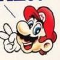
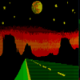
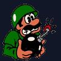

Above: French translation of SM64 refering to Koopas as turtles. This is fixed in the 3D All-Stars release.
|  | Mario is Missing and Mario Discovery Series |  | Mario Multi-platform games, ports, and remakes |  | *NEW*Various Mario Oddity articles, updated regularly |
|---|---|---|---|---|---|